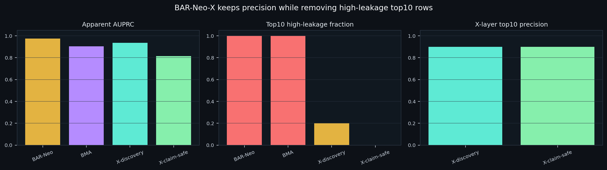

01TL;DR
02Data, Task, Training
CLEAN-NeoBench master rows, method scores, BAR-Neo candidate scores, BAR-Neo-BMA scores, and row-level leakage/overlap flags.
Candidate-level neoantigen/immunogenicity triage with a separate reviewer-facing clean-claim ranking.
No new base predictor is trained in BAR-Neo-X. It is a deterministic post-hoc reranking and explanation layer on existing BAR-Neo/BMA outputs.
Additive component attribution plus leakage-aware claim gate and metadata cap.
None. Existing QUBO/QK terms remain bounded heuristics in the broader pipeline, not a quantum advantage claim.
Research triage only. Candidate review requires patient metadata, disease context, presentation status, expression, clonality, and wet-lab validation.
03Performance Tradeoff
The right comparison is not raw metric maximization. The reviewer-facing objective is precision under leakage control.

| score | n | apparent_auprc | apparent_auroc | top10_precision | top20_precision | top10_high_leakage_fraction |
|---|---|---|---|---|---|---|
| barneo_score | 2715 | 0.9750 | 0.9772 | 1.00 | 1.00 | 1.00 |
| barneo_bma_score | 2715 | 0.9026 | 0.9212 | 1.00 | 1.00 | 1.00 |
| patient_gated_score | 2715 | 0.9752 | 0.9775 | 1.00 | 1.00 | 1.00 |
| patient_gated_bma_score | 2715 | 0.8962 | 0.9186 | 1.00 | 0.9000 | 1.00 |
| barneo_x_discovery_score | 2715 | 0.9356 | 0.9387 | 0.9000 | 0.9500 | 0.2000 |
| barneo_x_claim_safe_score | 2715 | 0.8133 | 0.8960 | 0.9000 | 0.8500 | 0.0000 |
Top-k safety audit
| score | top_k | precision | high_leakage_fraction | median_claim_safe_score | priority_review_rows |
|---|---|---|---|---|---|
| barneo_x_discovery_score | 10 | 0.9000 | 0.2000 | 0.4927 | 1 |
| barneo_x_discovery_score | 20 | 0.9500 | 0.6000 | 0.1914 | 1 |
| barneo_x_discovery_score | 50 | 0.9800 | 0.8400 | 0.1903 | 1 |
| barneo_x_discovery_score | 100 | 0.9900 | 0.8500 | 0.1892 | 1 |
| barneo_x_claim_safe_score | 10 | 0.9000 | 0.0000 | 0.4927 | 1 |
| barneo_x_claim_safe_score | 20 | 0.8500 | 0.0000 | 0.4548 | 1 |
| barneo_x_claim_safe_score | 50 | 0.6200 | 0.0000 | 0.3613 | 1 |
| barneo_x_claim_safe_score | 100 | 0.5600 | 0.2300 | 0.2571 | 1 |
04Ablation Audit
This table shows what breaks when penalties, leakage gating, or metadata capping are removed. The goal is to justify the conservative score, not maximize apparent AUPRC.
| score | n | apparent_auprc | apparent_auroc | top10_precision | top20_precision | top10_high_leakage_fraction | top20_high_leakage_fraction | interpretation |
|---|---|---|---|---|---|---|---|---|
| barneo_score | 2715 | 0.9750 | 0.9772 | 1.00 | 1.00 | 1.00 | 1.00 | raw apparent BAR-Neo score; high label metric but unsafe for clean top-k claims |
| barneo_x_positive_only_score | 2715 | 0.9634 | 0.9658 | 1.00 | 1.00 | 1.00 | 1.00 | positive evidence only; exposes why penalties are needed |
| barneo_x_no_penalty_score | 2715 | 0.8592 | 0.9201 | 0.9000 | 0.8500 | 0.0000 | 0.0000 | claim gate and metadata cap retained, but component penalties removed |
| barneo_x_no_leakage_gate_score | 2715 | 0.9356 | 0.9387 | 0.9000 | 0.9500 | 0.2000 | 0.6000 | component penalties retained, but high/medium leakage gate removed |
| barneo_x_no_metadata_cap_score | 2715 | 0.8133 | 0.8960 | 0.9000 | 0.8500 | 0.0000 | 0.0000 | component penalties and leakage gate retained, but missing metadata cap removed |
| barneo_x_claim_safe_score | 2715 | 0.8133 | 0.8960 | 0.9000 | 0.8500 | 0.0000 | 0.0000 | full BAR-Neo-X reviewer-facing score |
05Algorithm
06Top Claim-Safe Candidates
Rows are sorted by BAR-Neo-X claim-safe rank. Labels are benchmark labels, not clinical validation.
| candidate_id | peptide | hla_allele_4digit | label | leakage_risk_level | barneo_score | barneo_bma_score | barneo_x_claim_safe_score | barneo_x_primary_action | barneo_x_top_positive_factors | barneo_x_top_negative_factors |
|---|---|---|---|---|---|---|---|---|---|---|
| CNV0_02407 | KLMNIQQKL | HLA-A*02:01 | 1 | low | 0.8847 | 0.5128 | 0.5225 | priority_review_candidate | BAR-Neo model evidence=0.372; clean internal predictor support=0.142; BMA expert consensus=0.123; confidence support=0.108 | patient gate incompleteness penalty=-0.084; sparse expert support penalty=-0.060 |
| CNV0_02503 | RLSDFSEQL | HLA-A*02:01 | 1 | low | 0.8729 | 0.4623 | 0.5000 | secondary_review_candidate | BAR-Neo model evidence=0.367; clean internal predictor support=0.133; BMA expert consensus=0.111; confidence support=0.107 | patient gate incompleteness penalty=-0.084; sparse expert support penalty=-0.060 |
| CNV0_02410 | MLGEQLFPL | HLA-A*02:01 | 1 | low | 0.8860 | 0.4079 | 0.4972 | secondary_review_candidate | BAR-Neo model evidence=0.372; clean internal predictor support=0.139; confidence support=0.109; BMA expert consensus=0.098 | patient gate incompleteness penalty=-0.083; sparse expert support penalty=-0.060 |
| CNV0_02509 | SLLRSLENV | HLA-A*02:01 | 1 | low | 0.8885 | 0.4079 | 0.4957 | secondary_review_candidate | BAR-Neo model evidence=0.373; clean internal predictor support=0.139; confidence support=0.107; BMA expert consensus=0.098 | patient gate incompleteness penalty=-0.087; sparse expert support penalty=-0.060 |
| CNV0_02409 | IILVAVPHV | HLA-A*02:01 | 1 | low | 0.9018 | 0.3933 | 0.4946 | secondary_review_candidate | BAR-Neo model evidence=0.379; clean internal predictor support=0.132; confidence support=0.110; BMA expert consensus=0.094 | patient gate incompleteness penalty=-0.083; sparse expert support penalty=-0.060 |
| CNV0_02504 | LLVDLAEEL | HLA-A*02:01 | 1 | low | 0.8587 | 0.3933 | 0.4907 | secondary_review_candidate | BAR-Neo model evidence=0.361; clean internal predictor support=0.149; confidence support=0.106; BMA expert consensus=0.094 | patient gate incompleteness penalty=-0.085; sparse expert support penalty=-0.060 |
| CNV0_02420 | KLANPLPYT | HLA-A*02:01 | 0 | low | 0.7586 | 0.5128 | 0.4790 | secondary_review_candidate | BAR-Neo model evidence=0.319; clean internal predictor support=0.149; BMA expert consensus=0.123; confidence support=0.098 | patient gate incompleteness penalty=-0.088; sparse expert support penalty=-0.060 |
| CNV0_02450 | KELEGILLL | HLA-B*44:03 | 1 | low | 0.7059 | 0.4788 | 0.4684 | secondary_review_candidate | BAR-Neo model evidence=0.296; clean internal predictor support=0.160; BMA expert consensus=0.115; confidence support=0.094 | patient gate incompleteness penalty=-0.090; posterior disagreement penalty=-0.035; posterior uncertainty penalty=-0.011 |
| CNV0_02424 | LADEAEVYL | HLA-A*02:01 | 1 | low | 0.6263 | 0.6650 | 0.4663 | secondary_review_candidate | BAR-Neo model evidence=0.263; clean internal predictor support=0.160; BMA expert consensus=0.160; confidence support=0.089 | patient gate incompleteness penalty=-0.088; posterior disagreement penalty=-0.083; posterior uncertainty penalty=-0.029 |
| CNV0_02452 | LLDGFLATV | HLA-A*02:01 | 1 | low | 0.6789 | 0.5918 | 0.4579 | secondary_review_candidate | BAR-Neo model evidence=0.285; clean internal predictor support=0.160; BMA expert consensus=0.142; confidence support=0.092 | posterior disagreement penalty=-0.106; patient gate incompleteness penalty=-0.092; posterior uncertainty penalty=-0.035 |
| CNV0_02408 | FLYNLLTRV | HLA-A*02:01 | 1 | low | 0.8465 | 0.2273 | 0.4517 | secondary_review_candidate | BAR-Neo model evidence=0.356; clean internal predictor support=0.157; confidence support=0.104; BMA expert consensus=0.055 | patient gate incompleteness penalty=-0.089; sparse expert support penalty=-0.060 |
| CNV0_02478 | YVDFREYEYY | HLA-A*01:01 | 1 | low | 0.5792 | 0.5399 | 0.4462 | secondary_review_candidate | BAR-Neo model evidence=0.243; clean internal predictor support=0.160; BMA expert consensus=0.130; confidence support=0.086 | patient gate incompleteness penalty=-0.088; posterior disagreement penalty=-0.016; posterior uncertainty penalty=-0.006 |
| CNV0_02448 | ILDKVLVHL | HLA-A*02:01 | 1 | low | 0.6635 | 0.4324 | 0.4460 | secondary_review_candidate | BAR-Neo model evidence=0.279; clean internal predictor support=0.160; BMA expert consensus=0.104; confidence support=0.092 | patient gate incompleteness penalty=-0.088; posterior disagreement penalty=-0.030; posterior uncertainty penalty=-0.010 |
| CNV0_02508 | YILKYSVFL | HLA-A*02:01 | 1 | low | 0.8618 | 0.2535 | 0.4438 | secondary_review_candidate | BAR-Neo model evidence=0.362; clean internal predictor support=0.131; confidence support=0.105; BMA expert consensus=0.061 | patient gate incompleteness penalty=-0.089; sparse expert support penalty=-0.060 |
| CNV0_02507 | WVLALFDEV | HLA-A*02:01 | 1 | low | 0.8465 | 0.2603 | 0.4426 | secondary_review_candidate | BAR-Neo model evidence=0.356; clean internal predictor support=0.133; confidence support=0.104; BMA expert consensus=0.062 | patient gate incompleteness penalty=-0.087; sparse expert support penalty=-0.060 |
| CNV0_02397 | LPIQYEPVL | HLA-B*35:03 | 0 | low | 0.7326 | 0.4395 | 0.4324 | secondary_review_candidate | BAR-Neo model evidence=0.308; clean internal predictor support=0.140; BMA expert consensus=0.105; confidence support=0.073 | patient gate incompleteness penalty=-0.086; sparse expert support penalty=-0.060 |
| CNV0_02400 | ETSKQVTRW | HLA-A*25:01 | 0 | low | 0.6882 | 0.4129 | 0.4237 | secondary_review_candidate | BAR-Neo model evidence=0.289; clean internal predictor support=0.160; BMA expert consensus=0.099; confidence support=0.069 | patient gate incompleteness penalty=-0.090; sparse expert support penalty=-0.060 |
| CNV0_02425 | GIVEGLITT | HLA-A*02:01 | 1 | low | 0.5716 | 0.4418 | 0.4124 | secondary_review_candidate | BAR-Neo model evidence=0.240; clean internal predictor support=0.160; BMA expert consensus=0.106; confidence support=0.085 | patient gate incompleteness penalty=-0.090; posterior disagreement penalty=-0.030; posterior uncertainty penalty=-0.011 |
| CNV0_02460 | GIVEGLITTV | HLA-A*02:01 | 1 | low | 0.5318 | 0.4587 | 0.4078 | secondary_review_candidate | BAR-Neo model evidence=0.223; clean internal predictor support=0.160; BMA expert consensus=0.110; confidence support=0.084 | patient gate incompleteness penalty=-0.087; posterior disagreement penalty=-0.026; posterior uncertainty penalty=-0.009 |
| CNV0_02480 | ILDTAGKEEY | HLA-A*01:01 | 1 | medium | 0.8838 | 0.7322 | 0.3905 | secondary_review_candidate | BAR-Neo model evidence=0.371; BMA expert consensus=0.176; clean internal predictor support=0.160; confidence support=0.106 | medium leakage risk penalty=-0.100; patient gate incompleteness penalty=-0.090; near peptide overlap penalty=-0.060; posterior disagreement penalty=-0.048; posterior uncertainty penalty=-0.016 |
07Factor Audit
Top positive factors in claim-safe top50
| factor | n_top50_rows |
|---|---|
| BAR-Neo model evidence | 50 |
| clean internal predictor support | 50 |
| confidence support | 50 |
| BMA expert consensus | 49 |
Top negative factors in claim-safe top50
| factor | n_top50_rows |
|---|---|
| patient gate incompleteness penalty | 50 |
| posterior disagreement penalty | 36 |
| posterior uncertainty penalty | 36 |
| sparse expert support penalty | 14 |
| low-prevalence source penalty | 6 |
| medium leakage risk penalty | 4 |
| near peptide overlap penalty | 4 |
08Decision Matrix
| surface | best use | evidence | blocker | disposition |
|---|---|---|---|---|
| raw BAR-Neo score | internal discovery signal | AUPRC 0.975, top10 precision 1.000 | top10 high-leakage 1.000 | do not use as clean reviewer-facing top10 |
| BAR-Neo-X discovery score | hypothesis queue before manual audit | top10 precision 0.900 | top20 high-leakage 0.600 | internal only |
| BAR-Neo-X claim-safe score | reviewer-facing candidate triage | top10 precision 0.900, top20 precision 0.850 | lower apparent AUPRC by design | primary dossier ranking |
| public SOTA claim | none in current evidence package | candidate-level apparent audit only | overlap and leakage controls dominate the clean claim | forbidden |
| quantum advantage claim | none | QUBO/QK pieces are bounded engineering heuristics | no quantum runtime or advantage test | forbidden |
09Kakao Payload
10Sources + Paths
Output root: project/results/clean_neobench_barneo_2026_05_09
Metric audit: project/results/clean_neobench_barneo_2026_05_09/barneo_x_metric_audit.tsv
Top-k safety audit: project/results/clean_neobench_barneo_2026_05_09/barneo_x_topk_safety_audit.tsv
Candidate explanations: project/results/clean_neobench_barneo_2026_05_09/barneo_x_candidate_explanations.tsv
Candidate scores: project/results/clean_neobench_barneo_2026_05_09/barneo_x_candidate_scores.tsv
Summary JSON: project/results/clean_neobench_barneo_2026_05_09/BAR_NEO_X_INTERPRETABILITY_BOOST_SUMMARY.json
Manifest stage: barneo_x_interpretability_boost